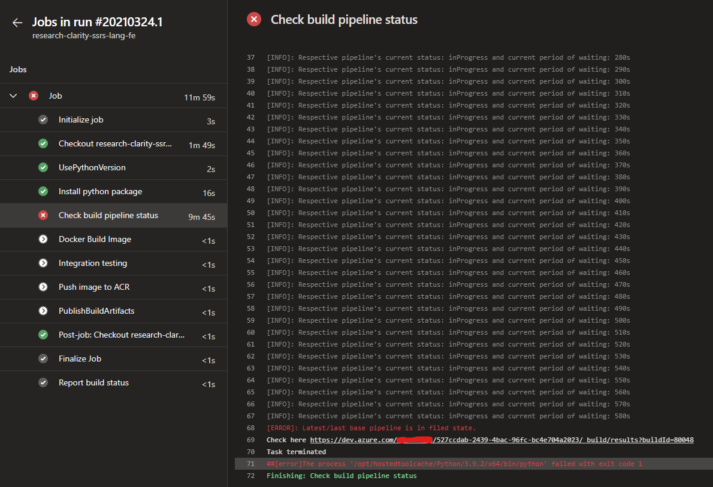

Retrieve Azure Devops Pipeline current/older metadata
Date
17th April, 2021
Author
Akash Desarda
1. The Problem
I believe to better understand any blog, understanding its original requirement is essential.
We use serval microservices in our application which is finally deployment using kubernetes. Each microservices has two CI pipeline:
- Base pipeline: Used to install all dependencies.
- Build pipeline: Used to build service on top of base pipeline.
Now, the frequency to run base pipeline as compared to build pipeline is rare as dependencies changes very rarely. Both base pipeline and build pipeline produces docker images as end result which is finally push to our container registry. If pipelines fails then its respective docker image is not pushed.
Initially, I used to manually check them every time. Its not that daunting as it sounds as there were few checks in place,
-
Docker image in build pipeline is build on top docker image from base pipeline. So even if latest base pipeline fails, build pipeline will simply pulled an earlier successfully pushed image.
-
In some rare scenario where if both the pipeline is triggered at the same time then I have to manually pause the build pipeline till base pipeline is not succeeded. Now this is defeating the purpose of automation via CI pipeline 😭
As I mentioned earlier, base pipeline can pull docker image from repository no matter what is the status of base pipeline. This is done intentionally so that the CI pipeline will not break. But this also gave rise harmful design flaw. Ideally build pipeline must have all the latest packages and utilities installed. Smart people can definitely smell a trade-off here.
So lets summarize into an checklist which can solve all this problems, ideally he build pipeline should check following checklist before staring its xecution:
- Is the base pipeline running?
- If running then wait and check after some interval using pooling mechanism
- Resume as soon as base pipeline succeeds
- What is status of latest completed base pipeline?
- If it is succeeded then continue
- If it is failed then stop build pipeline
2. The Solution
After going through the problem now its time to go through the solution.
2.1 Personal Access Token (PAT)
We'll need PAT to establish connection with Azure DevOps and create its client. Follow this official guide from Microsoft to create one. Make sure the PAT must have Read access for Build and Release. You can enable it from Edit > Scopes.
Warning
Make sure not to loose the PAT token key. As it is not stored anywhere an Azure devops and can be only copied once at the time of creation.
2.2 Creating Azure devops client
Azure DevOps provide extensive support through its REST api 🚀. We can directly use REST api over HTTPS operation, but we can't build custom logic around it. So instead I am using Azure DevOps Python API
Lets see how to create the client
1 2 3 4 5 6 7 8 | |
2.3 Retrieve Builds
Here I will retrieve specific builds of in focus base pipeline with the help of filters. The best part of this REST api is that they are updated instantly 😍.
1 2 3 4 5 6 7 | |
Tip
I struggled a bit for searching 'definitionId'. But there's a neat trick, just goto your pipeline's build page (where it shows all history of runs) and in the url you will find it.
2.4 Pooling Mechanism
This is the most critical part as it will ensure to tick all element from the above checklist. The script first checks result of last build and if its not in failed state then continue to check status for completion. This step is repeated for every 10 seconds with timeout of 30m
1 2 3 4 5 6 7 8 9 10 11 12 13 14 15 16 17 18 19 20 21 22 23 24 25 26 27 28 29 30 31 32 33 | |
Info
I had even added a little extra logging information in case of failure to point out to failed run.
1 2 3 | |
1 2 3 | |
3. Integration with Pipeline
This part can vary with your use-case or preference. This is how I do it.
- I put the script at fix location in every repo
- I set python version to be used as 3.x
- I used pipeline variable to pass some parameters to the script. Like PAT which I store it as secret and then pass it the script.
- Then finally I used Run Python Script task of Azure DevOps pipeline to run it.
1 2 3 4 5 6 7 8 9 10 11 12 13 14 15 16 17 | |
Tip
I always run this task at beginning as to avoid running other task unnecessarily if this fails eventually.
Here is a screenshot of working of the logic

Tags: Azure Devops, CI/CD